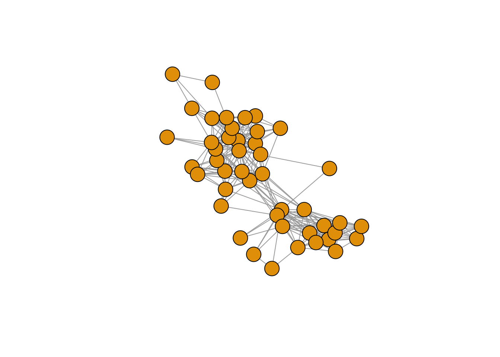
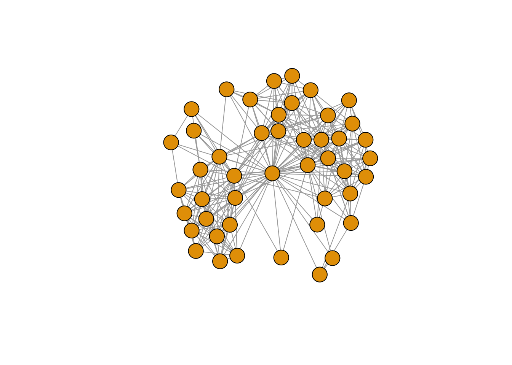

Chapter 7 The egor package
The egor package provides tools for data import, data manipulation, network measures and visualization for egocentric network analysis. This chapter currently focuses on egocentric data import, with Section 7.1 showing how we can use egor to read raw csv files into the R data objects used throughout this workshop (those saved in the data.rda file).
More information about this package can be found in its github website and main vignette. A list of all egor vignettes is here.
7.1 Importing ego-network data
- Here we show how to use
egorto import egocentric data stored in csv files. This operation requires that all needed csv files are first imported into R data frames, using standard data import functions such asread_csv(). Theegorfunctions then take these data frames as input and return anegorobject as output. - Once we have the data in an
egorobject, this can be manipulated and analyzed in various and powerful ways. It can also further be converted into the other types of objects we have used throughout this workshop, such as a data frame of alter attributes or a list of igraph objects. - In this example, we import the data with the function
threefiles_to_egor. This assumes that the data are stored in three datasets: (1) a datasets with ego attributes for all egos; (2) a datasets with attributes of the alters and ego-alter ties, for all alters from all egos; (3) a datasets of alter-alter ties with a single edge list for all alters from all egos. These correspond to the three main components of egocentric data discussed in Section 3.2: (1) ego attributes; (2) alter attributes; (3) alter-alter ties. - In some cases, these three components are combined into two or even one single dataset.
egoroffers functions to import data in these formats as well:onefile_to_egorandtwofiles_to_egor. See their manual page for the contents and features that the functions assume in these data. - Finally,
egorhas functions to import egocentric data obtained from popular data collection software, such asread_openeddi,read_egoweb, andread_egonet. - Regardless of the format of the original data, an
egorobject always stores the data in the three components indicated above (ego attributes, alter attributes, alter-alter ties). Each of the three components can be “activated” using theactivatefunction, similar to thetidygraphpackage. After we select which of the three components we want to work on (viaactivate), anegorobject can be easily manipulated withdplyrverbs. - What we do in the following code.
- Read three csv files (ego attributes, alter attributes, alter-alter ties) into R data frames.
- Create an
egorobject from these three data frames. - Convert the
egorobject to a list ofigraphego-networks.
- The resulting data objects are those that we used in the previous chapters (saved in the
data.rdafile).
# Load packages
library(tidyverse)
library(magrittr)
library(igraph)
library(egor)
library(janitor)
# Import the raw csv files into R as data frames.
# Ego attributes
(ego.df <- read_csv("./Data/raw_data/ego_data.csv"))## # A tibble: 102 × 9
## ego_ID ego.sex ego.age ego.arr ego.edu ego.inc empl ego.empl.bin ego.age.cat
## <dbl> <chr> <dbl> <dbl> <chr> <dbl> <dbl> <chr> <chr>
## 1 28 Male 61 2008 Second… 350 3 Yes 60+
## 2 29 Male 38 2000 Primary 900 4 Yes 36-40
## 3 33 Male 30 2010 Primary 200 3 Yes 26-30
## 4 35 Male 25 2009 Second… 1000 3 Yes 18-25
## 5 39 Male 29 2007 Primary 0 1 No 26-30
## 6 40 Male 56 2008 Second… 950 4 Yes 51-60
## 7 45 Male 52 1975 Primary 1600 3 Yes 51-60
## 8 46 Male 35 2002 Second… 1200 4 Yes 31-35
## 9 47 Male 22 2010 Second… 700 4 Yes 18-25
## 10 48 Male 51 2007 Primary 950 4 Yes 51-60
## # … with 92 more rows# Convert all character variables to factor
# Using dplyr's across(), this code takes all ego.df variables that are character
# (where(is.character)) and applies the as.factor() function to each, converting
# it to a factor variable. The resulting data frame is re-assigned to ego.df
# (%<>%).
ego.df %<>%
mutate(across(where(is.character), as.factor))
# Alter attributes (all alters from all egos in same data frame).
(alter.attr.all <- read_csv("./Data/raw_data/alter_attributes.csv"))## # A tibble: 4,590 × 12
## alter_ID ego_ID alter_num alter.sex alter.age.cat alter.rel alter.nat
## <dbl> <dbl> <dbl> <chr> <chr> <chr> <chr>
## 1 2801 28 1 Female 51-60 Close family Sri Lanka
## 2 2802 28 2 Male 51-60 Other family Sri Lanka
## 3 2803 28 3 Male 51-60 Close family Sri Lanka
## 4 2804 28 4 Male 60+ Close family Sri Lanka
## 5 2805 28 5 Female 41-50 Close family Sri Lanka
## 6 2806 28 6 Female 60+ Close family Sri Lanka
## 7 2807 28 7 Male 41-50 Other family Sri Lanka
## 8 2808 28 8 Female 36-40 Other family Sri Lanka
## 9 2809 28 9 Female 51-60 Other family Sri Lanka
## 10 2810 28 10 Male 60+ Other family Sri Lanka
## # … with 4,580 more rows, and 5 more variables: alter.res <chr>,
## # alter.clo <dbl>, alter.loan <chr>, alter.fam <chr>, alter.age <dbl># Convert all character variables to factor.
alter.attr.all %<>%
mutate(across(where(is.character), as.factor))
# To make things easier in the rest of the workshop materials, make sure the
# factors of alter gender and ego gender have the same levels (categories).
# Levels of alter.sex variable.
alter.attr.all %>%
pull(alter.sex) %>%
levels## [1] "Female" "Male"# Levels of ego.sex variable: Female doesn't appear because no ego is female in
# these data.
ego.df %>%
pull(ego.sex) %>%
levels## [1] "Male"ego.df %>%
tabyl(ego.sex)## ego.sex n percent
## Male 102 1# Add the Female level to the ego.sex factor.
ego.df %<>%
mutate(ego.sex = fct_expand(ego.sex, "Female"))
# See the result
ego.df %>%
pull(ego.sex) %>%
levels## [1] "Male" "Female"# Note that this doesn't alter the actual data in ego.df, just adds "Female" to
# the list of possible levels (categories) in ego.sex.
ego.df %>%
tabyl(ego.sex)## ego.sex n percent
## Male 102 1
## Female 0 0# Alter-alter ties (single edge list with all alters from all egos).
(alter_ties <- read_csv("./Data/raw_data/alter_ties.csv"))## # A tibble: 30,064 × 4
## from to ego_ID weight
## <dbl> <dbl> <dbl> <dbl>
## 1 2801 2802 28 1
## 2 2801 2803 28 1
## 3 2801 2804 28 1
## 4 2801 2805 28 1
## 5 2801 2806 28 1
## 6 2801 2807 28 1
## 7 2801 2808 28 1
## 8 2801 2809 28 1
## 9 2801 2810 28 1
## 10 2801 2811 28 1
## # … with 30,054 more rows# Using these 3 data frames, create an egor object.
egor.obj <- egor::threefiles_to_egor(egos= ego.df,
alters.df= alter.attr.all,
edges= alter_ties,
ID.vars = list(ego = "ego_ID",
alter = "alter_ID",
source = "from",
target = "to"))
# The egor object can immediately be converted to a list of igraph networks.
gr.list <- egor::as_igraph(egor.obj)
# See the result
head(gr.list)## $`28`
## IGRAPH 96aa300 UNW- 45 259 --
## + attr: .egoID (g/n), name (v/c), alter_num (v/n), alter.sex (v/c),
## | alter.age.cat (v/c), alter.rel (v/c), alter.nat (v/c), alter.res
## | (v/c), alter.clo (v/n), alter.loan (v/c), alter.fam (v/c), alter.age
## | (v/n), weight (e/n)
## + edges from 96aa300 (vertex names):
## [1] 2801--2802 2801--2803 2801--2804 2801--2805 2801--2806 2801--2807
## [7] 2801--2808 2801--2809 2801--2810 2801--2811 2801--2812 2801--2813
## [13] 2801--2814 2801--2815 2801--2818 2801--2820 2801--2823 2801--2825
## [19] 2801--2827 2801--2828 2801--2829 2801--2831 2801--2840 2801--2841
## [25] 2802--2803 2802--2804 2802--2805 2802--2806 2802--2807 2802--2808
## + ... omitted several edges
##
## $`29`
## IGRAPH 37b38e5 UNW- 45 202 --
## + attr: .egoID (g/n), name (v/c), alter_num (v/n), alter.sex (v/c),
## | alter.age.cat (v/c), alter.rel (v/c), alter.nat (v/c), alter.res
## | (v/c), alter.clo (v/n), alter.loan (v/c), alter.fam (v/c), alter.age
## | (v/n), weight (e/n)
## + edges from 37b38e5 (vertex names):
## [1] 2901--2902 2901--2904 2901--2906 2901--2907 2901--2908 2901--2909
## [7] 2901--2910 2901--2911 2901--2915 2901--2916 2901--2917 2901--2918
## [13] 2901--2919 2901--2927 2901--2928 2901--2929 2901--2930 2901--2931
## [19] 2901--2936 2901--2942 2901--2945 2902--2903 2902--2904 2902--2905
## [25] 2902--2906 2902--2907 2902--2908 2902--2909 2902--2910 2902--2911
## + ... omitted several edges
##
## $`33`
## IGRAPH a5044e6 UNW- 45 207 --
## + attr: .egoID (g/n), name (v/c), alter_num (v/n), alter.sex (v/c),
## | alter.age.cat (v/c), alter.rel (v/c), alter.nat (v/c), alter.res
## | (v/c), alter.clo (v/n), alter.loan (v/c), alter.fam (v/c), alter.age
## | (v/n), weight (e/n)
## + edges from a5044e6 (vertex names):
## [1] 3301--3302 3301--3303 3301--3304 3301--3305 3301--3306 3301--3307
## [7] 3301--3308 3301--3309 3301--3310 3301--3311 3301--3312 3301--3313
## [13] 3301--3314 3301--3315 3301--3316 3301--3317 3301--3318 3301--3319
## [19] 3301--3320 3301--3321 3301--3322 3301--3323 3302--3303 3302--3304
## [25] 3302--3305 3302--3306 3302--3307 3302--3308 3302--3309 3302--3310
## + ... omitted several edges
##
## $`35`
## IGRAPH 0e9bf2a UNW- 45 221 --
## + attr: .egoID (g/n), name (v/c), alter_num (v/n), alter.sex (v/c),
## | alter.age.cat (v/c), alter.rel (v/c), alter.nat (v/c), alter.res
## | (v/c), alter.clo (v/n), alter.loan (v/c), alter.fam (v/c), alter.age
## | (v/n), weight (e/n)
## + edges from 0e9bf2a (vertex names):
## [1] 3501--3502 3501--3503 3501--3504 3501--3505 3501--3506 3501--3507
## [7] 3501--3508 3501--3509 3501--3510 3501--3512 3501--3513 3501--3514
## [13] 3501--3516 3501--3517 3501--3522 3501--3523 3501--3524 3501--3525
## [19] 3501--3526 3501--3527 3501--3528 3501--3529 3501--3530 3501--3532
## [25] 3501--3533 3501--3534 3501--3535 3501--3536 3501--3540 3501--3543
## + ... omitted several edges
##
## $`39`
## IGRAPH 8e076a6 UNW- 45 92 --
## + attr: .egoID (g/n), name (v/c), alter_num (v/n), alter.sex (v/c),
## | alter.age.cat (v/c), alter.rel (v/c), alter.nat (v/c), alter.res
## | (v/c), alter.clo (v/n), alter.loan (v/c), alter.fam (v/c), alter.age
## | (v/n), weight (e/n)
## + edges from 8e076a6 (vertex names):
## [1] 3901--3902 3901--3903 3901--3904 3901--3905 3901--3906 3901--3907
## [7] 3901--3911 3901--3913 3901--3920 3901--3924 3901--3925 3901--3931
## [13] 3901--3932 3901--3933 3901--3937 3901--3938 3901--3940 3901--3941
## [19] 3902--3903 3902--3904 3902--3905 3902--3906 3902--3907 3902--3908
## [25] 3902--3909 3902--3910 3902--3913 3902--3924 3902--3925 3902--3931
## + ... omitted several edges
##
## $`40`
## IGRAPH 2959616 UNW- 45 255 --
## + attr: .egoID (g/n), name (v/c), alter_num (v/n), alter.sex (v/c),
## | alter.age.cat (v/c), alter.rel (v/c), alter.nat (v/c), alter.res
## | (v/c), alter.clo (v/n), alter.loan (v/c), alter.fam (v/c), alter.age
## | (v/n), weight (e/n)
## + edges from 2959616 (vertex names):
## [1] 4001--4003 4001--4007 4001--4008 4001--4009 4001--4036 4001--4040
## [7] 4001--4045 4002--4003 4002--4004 4002--4006 4002--4008 4002--4009
## [13] 4002--4010 4002--4011 4002--4012 4002--4013 4002--4014 4002--4015
## [19] 4002--4016 4002--4017 4002--4021 4002--4029 4002--4036 4002--4037
## [25] 4002--4038 4002--4040 4002--4041 4002--4042 4002--4043 4002--4044
## + ... omitted several edges# Note that gr.list is a named list, with each element's name being the
# corresponding ego ID.
names(gr.list)## [1] "28" "29" "33" "35" "39" "40" "45" "46" "47" "48" "49" "51"
## [13] "52" "53" "55" "56" "57" "58" "59" "60" "61" "62" "64" "65"
## [25] "66" "68" "69" "71" "73" "74" "78" "79" "80" "81" "82" "83"
## [37] "84" "85" "86" "87" "88" "90" "91" "92" "93" "94" "95" "97"
## [49] "99" "102" "104" "105" "107" "108" "109" "110" "112" "113" "114" "115"
## [61] "116" "118" "119" "120" "121" "122" "123" "124" "125" "126" "127" "128"
## [73] "129" "130" "131" "132" "133" "135" "136" "138" "139" "140" "141" "142"
## [85] "144" "146" "147" "149" "151" "152" "153" "154" "155" "156" "157" "158"
## [97] "159" "160" "161" "162" "163" "164"# In gr.list, the igraph ego-networks do not include the ego node. We can create
# the same list, but now include a node for ego in each igraph ego-network.
gr.list.ego <- egor::as_igraph(egor.obj, include.ego = TRUE)
# Let's look at the same network with and without the ego.
# Without ego (gr.list).
(gr <- gr.list[["28"]])## IGRAPH 96aa300 UNW- 45 259 --
## + attr: .egoID (g/n), name (v/c), alter_num (v/n), alter.sex (v/c),
## | alter.age.cat (v/c), alter.rel (v/c), alter.nat (v/c), alter.res
## | (v/c), alter.clo (v/n), alter.loan (v/c), alter.fam (v/c), alter.age
## | (v/n), weight (e/n)
## + edges from 96aa300 (vertex names):
## [1] 2801--2802 2801--2803 2801--2804 2801--2805 2801--2806 2801--2807
## [7] 2801--2808 2801--2809 2801--2810 2801--2811 2801--2812 2801--2813
## [13] 2801--2814 2801--2815 2801--2818 2801--2820 2801--2823 2801--2825
## [19] 2801--2827 2801--2828 2801--2829 2801--2831 2801--2840 2801--2841
## [25] 2802--2803 2802--2804 2802--2805 2802--2806 2802--2807 2802--2808
## + ... omitted several edges# Just the vertex sequence.
V(gr)## + 45/45 vertices, named, from 96aa300:
## [1] 2801 2802 2803 2804 2805 2806 2807 2808 2809 2810 2811 2812 2813 2814 2815
## [16] 2816 2817 2818 2819 2820 2821 2822 2823 2824 2825 2826 2827 2828 2829 2830
## [31] 2831 2832 2833 2834 2835 2836 2837 2838 2839 2840 2841 2842 2843 2844 2845# With ego (gr.list.ego).
(gr.ego <- gr.list.ego[["28"]])## IGRAPH 3f9f274 UNW- 46 304 --
## + attr: .egoID (g/n), name (v/c), alter_num (v/n), alter.sex (v/c),
## | alter.age.cat (v/c), alter.rel (v/c), alter.nat (v/c), alter.res
## | (v/c), alter.clo (v/n), alter.loan (v/c), alter.fam (v/c), alter.age
## | (v/n), weight (e/n)
## + edges from 3f9f274 (vertex names):
## [1] 2801--2802 2801--2803 2801--2804 2801--2805 2801--2806 2801--2807
## [7] 2801--2808 2801--2809 2801--2810 2801--2811 2801--2812 2801--2813
## [13] 2801--2814 2801--2815 2801--2818 2801--2820 2801--2823 2801--2825
## [19] 2801--2827 2801--2828 2801--2829 2801--2831 2801--2840 2801--2841
## [25] 2802--2803 2802--2804 2802--2805 2802--2806 2802--2807 2802--2808
## + ... omitted several edges# Just the vertex sequence. Note the name of the last node.
V(gr.ego)## + 46/46 vertices, named, from 3f9f274:
## [1] 2801 2802 2803 2804 2805 2806 2807 2808 2809 2810 2811 2812 2813 2814 2815
## [16] 2816 2817 2818 2819 2820 2821 2822 2823 2824 2825 2826 2827 2828 2829 2830
## [31] 2831 2832 2833 2834 2835 2836 2837 2838 2839 2840 2841 2842 2843 2844 2845
## [46] ego# In our ego-network data, alter-alter ties have weights (1 or 2, see the data
# codebook).
E(gr)$weight## [1] 1 1 1 1 1 1 1 1 1 1 1 1 1 1 2 1 1 1 1 1 2 1 1 1 1 1 1 1 1 1 1 1 1 1 1 1 1
## [38] 1 1 1 1 1 1 1 1 1 1 1 1 1 1 1 1 1 1 1 1 2 2 1 1 1 1 1 1 1 1 1 1 1 1 1 1 1
## [75] 1 1 1 1 1 2 1 1 1 1 1 1 1 1 1 1 2 2 1 1 1 1 1 1 1 1 1 1 1 1 1 1 1 2 1 2 1
## [112] 1 1 1 1 1 1 1 1 2 1 1 1 1 1 1 1 1 1 1 2 1 1 1 1 1 1 1 1 2 1 1 1 1 2 1 1 1
## [149] 1 1 1 1 1 1 1 2 2 1 1 2 1 1 1 1 1 1 1 1 1 1 1 1 1 1 1 1 1 1 2 1 1 1 1 1 1
## [186] 1 1 1 1 1 1 1 1 1 1 1 2 1 1 1 1 1 1 1 1 1 1 2 1 1 1 1 2 1 1 2 1 1 1 1 1 1
## [223] 1 1 1 1 1 1 1 2 1 1 1 1 2 1 1 1 1 1 1 1 1 1 1 1 1 1 1 1 1 1 1 1 1 1 2 1 1# These weights are obviously not defined for ego-alter ties. So in the
# ego-network with the ego included, the tie weights are NA for ego-alter ties.
E(gr.ego)$weight## [1] 1 1 1 1 1 1 1 1 1 1 1 1 1 1 2 1 1 1 1 1 2 1 1 1 1
## [26] 1 1 1 1 1 1 1 1 1 1 1 1 1 1 1 1 1 1 1 1 1 1 1 1 1
## [51] 1 1 1 1 1 1 1 2 2 1 1 1 1 1 1 1 1 1 1 1 1 1 1 1 1
## [76] 1 1 1 1 2 1 1 1 1 1 1 1 1 1 1 2 2 1 1 1 1 1 1 1 1
## [101] 1 1 1 1 1 1 1 2 1 2 1 1 1 1 1 1 1 1 1 2 1 1 1 1 1
## [126] 1 1 1 1 1 2 1 1 1 1 1 1 1 1 2 1 1 1 1 2 1 1 1 1 1
## [151] 1 1 1 1 1 2 2 1 1 2 1 1 1 1 1 1 1 1 1 1 1 1 1 1 1
## [176] 1 1 1 2 1 1 1 1 1 1 1 1 1 1 1 1 1 1 1 1 1 2 1 1 1
## [201] 1 1 1 1 1 1 1 2 1 1 1 1 2 1 1 2 1 1 1 1 1 1 1 1 1
## [226] 1 1 1 1 2 1 1 1 1 2 1 1 1 1 1 1 1 1 1 1 1 1 1 1 1
## [251] 1 1 1 1 1 1 2 1 1 NA NA NA NA NA NA NA NA NA NA NA NA NA NA NA NA
## [276] NA NA NA NA NA NA NA NA NA NA NA NA NA NA NA NA NA NA NA NA NA NA NA NA NA
## [301] NA NA NA NAE(gr.ego)[inc("ego")]$weight## [1] NA NA NA NA NA NA NA NA NA NA NA NA NA NA NA NA NA NA NA NA NA NA NA NA NA
## [26] NA NA NA NA NA NA NA NA NA NA NA NA NA NA NA NA NA NA NA NA# This may create problems in certain functions, for example the plot.igraph()
# function. So let's replace those NA's with a distinctive weight value for
# ego-alter ties: 3.
E(gr.ego)$weight %<>%
replace_na(., 3)
# See the result
E(gr.ego)$weight## [1] 1 1 1 1 1 1 1 1 1 1 1 1 1 1 2 1 1 1 1 1 2 1 1 1 1 1 1 1 1 1 1 1 1 1 1 1 1
## [38] 1 1 1 1 1 1 1 1 1 1 1 1 1 1 1 1 1 1 1 1 2 2 1 1 1 1 1 1 1 1 1 1 1 1 1 1 1
## [75] 1 1 1 1 1 2 1 1 1 1 1 1 1 1 1 1 2 2 1 1 1 1 1 1 1 1 1 1 1 1 1 1 1 2 1 2 1
## [112] 1 1 1 1 1 1 1 1 2 1 1 1 1 1 1 1 1 1 1 2 1 1 1 1 1 1 1 1 2 1 1 1 1 2 1 1 1
## [149] 1 1 1 1 1 1 1 2 2 1 1 2 1 1 1 1 1 1 1 1 1 1 1 1 1 1 1 1 1 1 2 1 1 1 1 1 1
## [186] 1 1 1 1 1 1 1 1 1 1 1 2 1 1 1 1 1 1 1 1 1 1 2 1 1 1 1 2 1 1 2 1 1 1 1 1 1
## [223] 1 1 1 1 1 1 1 2 1 1 1 1 2 1 1 1 1 1 1 1 1 1 1 1 1 1 1 1 1 1 1 1 1 1 2 1 1
## [260] 3 3 3 3 3 3 3 3 3 3 3 3 3 3 3 3 3 3 3 3 3 3 3 3 3 3 3 3 3 3 3 3 3 3 3 3 3
## [297] 3 3 3 3 3 3 3 3E(gr.ego)[inc("ego")]$weight## [1] 3 3 3 3 3 3 3 3 3 3 3 3 3 3 3 3 3 3 3 3 3 3 3 3 3 3 3 3 3 3 3 3 3 3 3 3 3 3
## [39] 3 3 3 3 3 3 3# Let's now plot the two ego-networks.
# Without ego.
plot(gr, vertex.label = NA)
# With ego.
plot(gr.ego, vertex.label = NA)
# Let's do the weight replacement operation above (NA replaced by 3 for ego-alter
# tie weights) for all the ego-networks in gr.list.ego.
for (i in seq_along(gr.list.ego)) {
E(gr.list.ego[[i]])$weight %<>%
replace_na(., 3)
}
# The operation above can be done with tidyverse map functions as well, but
# I think a for loop makes the code easier to follow in this case. This is the
# map equivalent of that for loop:
new.list <- gr.list.ego %>%
map(function(gr) {replace_na(E(gr)$weight, 3); gr})
# Sometimes it's useful to have ego ID as a graph attribute of the ego-network
# in addition to having it as name of the ego-network's element in the list.
# So let's add ego ID as the $ego_ID graph attribute in each list element.
# List of graphs without the ego.
for (i in seq_along(gr.list)) {
gr.list[[i]]$ego_ID <- names(gr.list)[[i]]
}
# List of graphs with the ego.
for (i in seq_along(gr.list.ego)) {
gr.list.ego[[i]]$ego_ID <- names(gr.list.ego)[[i]]
}
# See the result
gr.list[["28"]]## IGRAPH 96aa300 UNW- 45 259 --
## + attr: .egoID (g/n), ego_ID (g/c), name (v/c), alter_num (v/n),
## | alter.sex (v/c), alter.age.cat (v/c), alter.rel (v/c), alter.nat
## | (v/c), alter.res (v/c), alter.clo (v/n), alter.loan (v/c), alter.fam
## | (v/c), alter.age (v/n), weight (e/n)
## + edges from 96aa300 (vertex names):
## [1] 2801--2802 2801--2803 2801--2804 2801--2805 2801--2806 2801--2807
## [7] 2801--2808 2801--2809 2801--2810 2801--2811 2801--2812 2801--2813
## [13] 2801--2814 2801--2815 2801--2818 2801--2820 2801--2823 2801--2825
## [19] 2801--2827 2801--2828 2801--2829 2801--2831 2801--2840 2801--2841
## [25] 2802--2803 2802--2804 2802--2805 2802--2806 2802--2807 2802--2808
## + ... omitted several edgesgr.list[["28"]]$ego_ID## [1] "28"# Extract alter attributes and graph for one ego (ego ID 28)
# Alter attribute data frame.
alter.attr.28 <- alter.attr.all %>%
filter(ego_ID==28)
# Ego-network graph.
gr.28 <- gr.list[["28"]]
# Ego-network graph, with ego included.
gr.ego.28 <- gr.list.ego[["28"]]
# Save all data to file.
save(ego.df, alter.attr.all, gr.list, alter.attr.28, gr.28, gr.ego.28, file="./Data/data.rda")7.2 Analyzing and visualizing ego-network data
In progress.
egor also simplifies some of the analysis operations that we have seen in the previous chapters, such as the calculation of certain compositional and structural measures.